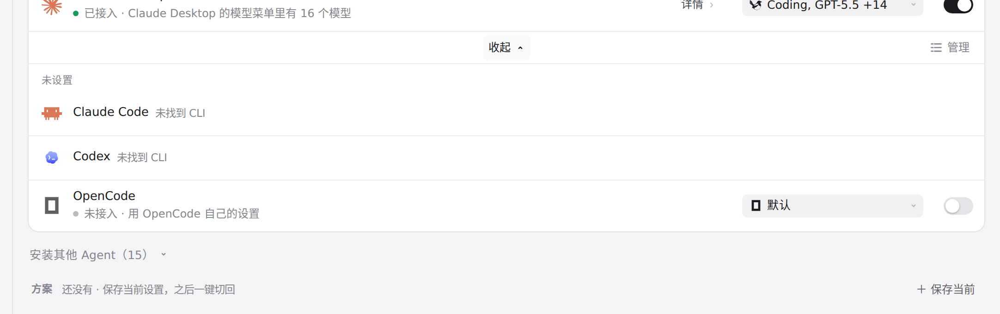
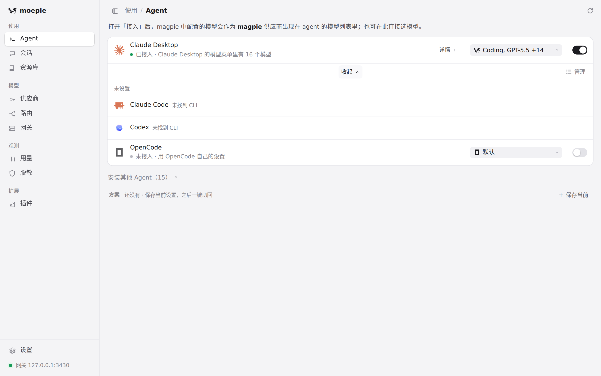

#4 界面预览
commit 5fb0509 · 回到 PR · Codex 额度耗尽或恢复不再自动把登录方式改成 magpie API，Sync 还会清掉旧的 codex.out 标记；界面上「Agent」页 Codex 登录方式选择器里 ChatGPT 与「始终 ChatGPT」两项的说明文字随之改写（含简中、繁中、日、德等语言）。
红线是鼠标走过的轨迹，红色圆环是一次点击；底部文字是这一步在做什么。空格暂停，← → 逐段查看。
 Codex 登录方式选项的说明 · 展开后 Codex 一行，右侧是它的登录方式方块
Codex 登录方式选项的说明 · 展开后 Codex 一行，右侧是它的登录方式方块

Codex 登录方式选项的说明 · 展开「显示其余」后的列表：Codex 一行写着未找到 CLI，行上没有登录方式等设置项

Codex 登录方式选项的说明 · 展开后的全部 Agent（Claude Code、Codex、OpenCode）与各自的设置入口